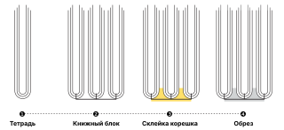
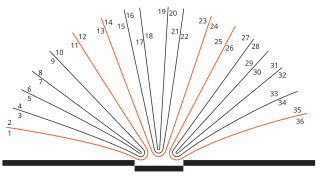

Введение
Книга делится на два основных элемента: книжный блок и переплёт. Эти вещи создаются отдельно и потом скрепляются1 между собой.

Книжный блок
Возьмём несколько листов бумаги. Согнём каждый пополам и вложим друг в друга — так мы получим тетрадь. Сложенные в стопку тетради образуют книжный блок. Их склеивают и, при желании, перед этим прошивают между собой2. Блок готов!

Способов скрепления листов существует много, но один из самых популярных — КШС (клеевое швейное скрепление). Такие переплёты, где листы сшиваются между собой, можно сделать своими руками. Есть ещё один способ — КБС (клеевое бесшовное соединение).
Выбор способа скрепления определяет, сколько страниц будет в твоей книге. Например, если ты хочешь прошить свою книгу, то количество страниц должно быть кратно четырём. Но в любом случае кол-во страниц в книге должно быть кратно двум.
Разберёмся, почему так происходит. Лист — это минимальный кирпичик, из которого собирается книжный блок. Лист имеет две поверхности: верхнюю и нижнюю. Каждая сторона — это одна страница в книге. В нашей книге пришлось согнуть его, чтобы создать тетрадь. Из-за сгиба получаем уже 4 поверхности: по две с каждой из двух сторон. Выходит, что на одном листе помещается 4 страницы. Так как он является минимальным кирпичиком, из которого собирается блок, то вся книга будет состоять из листов по 4 страницы. Существуют другие способы создания книжного блока, где не нужно сгибать бумагу. Например, в дешёвых книгах все страницы просто приклеиваются к корешку, а значит их не нужно сгибать для сшивки. Поэтому на одном листе размещается только 2 страницы. В такой книге количество полос будет кратно двум.
Эксперименты. Знание этих основ открывает перед тобой возможность экспериментировать с телом книги, вводить яркие решения. Например, вставить в книгу листы другого цвета3. При этом важно брать бумагу той же плотности, что и другие листы в блоке, иначе более толстый лист разрушит равномерную конструкцию тетрадей. Такая книга быстрее станет расхлябанной и неопрятной. В целом, даже такая задача решается. Решается она несколькими способами, творчески. Главное правило — тетради книжного блока должны быть одинаковые по ширине. Первый способ: если в твоей книге тетрадь состоит, к примеру, из 4‑х листов, ты можешь заменить одну тетрадь в блоке одним очень плотным листом. В сложенном состоянии его ширина должна быть равна ширине обычной тетради. Второй вариант — комбинировать разные тетради. Например, в одной останется 4 обычных листа, а во второй будет 2 обычных листа, вложенные в один плотный лист.

Как ты уже можешь догадаться, в твердом переплете не получится бездумно делать вставки из другой бумаги. Необходимо грамотно распланировать контент, чтобы нужные страницы попадали именно на цветные листы. Если ты хочешь систематически включать в книжный блок более плотную бумагу, например, выделять шмуцтитулы ощутимо другой плотности, при выборе твердого переплета это требует очень виртуозного распределения контента по книге.

Если не хватает ширины разворота, ты можешь продлить страницы и сделать клапан. То есть печатный лист, грубо говоря, можно увеличивать по длине. В этом случае нам также важно, чтобы появившийся лист не нарушал ширину тетради. Также важно будет рассчитать расположение разворота с клапаном, чтобы расположить его в правильных тетрадях.
Если хочется ввести в книжный блок прозрачные страницы, стоит заранее советоваться с типографом и печатником, потому что такой материал, как калька может не сшиваться в блок, а приклеивается к одной из его страниц. Другими словами, калька не будет являться частью конструкции книжного блока4.

Переплет
В просторечье его называют обложкой, но на самом деле переплёт представляет собой нечто большее и подразумевает под собой два понятия. Во-первых, переплет — это тип скрепления страниц в книжном блоке. Во-вторых, это конструкция, на которой располагается обложка — яркий и красивый графический материал, который презентует книгу.
В первую очередь он существует для того, чтобы защищать блок от износа. Выбор зависит от ответа на следующие вопросы: сколько книга должна прослужить? где её будут использовать? какой объем страниц у книги?
Если ты делаешь студенческий проект, то книга, скорее всего, должна пережить всего лишь один просмотр. Для неё подойдёт любой переплёт, который тебе будет интересно попробовать, например, открытый5. Если ты хочешь, чтобы книгу читали и передавали от человека к человеку, стоит остановиться на закрытых переплётах: твёрдом или мягком. Твёрдый переплёт сохранит страницы дольше, хотя сам может потрепаться, если его обклеить марким материалом: светлой бумагой или черной с матовым покрытием. Процесс решения этих задач довольно творческий. Можно подобрать менее маркие материалы для обложки, а можно добавить книге суперобложку, чтобы сам переплёт не пачкался. Мягкая обложка не подходит для объемных толстых книг, так как она не выдержит вес страниц.